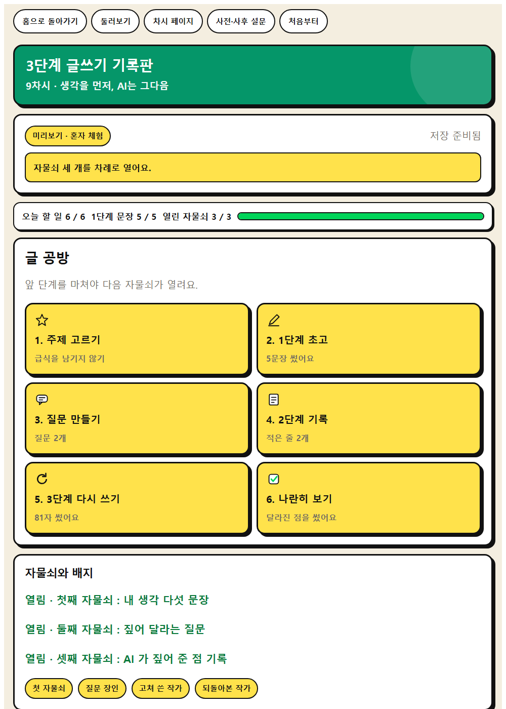
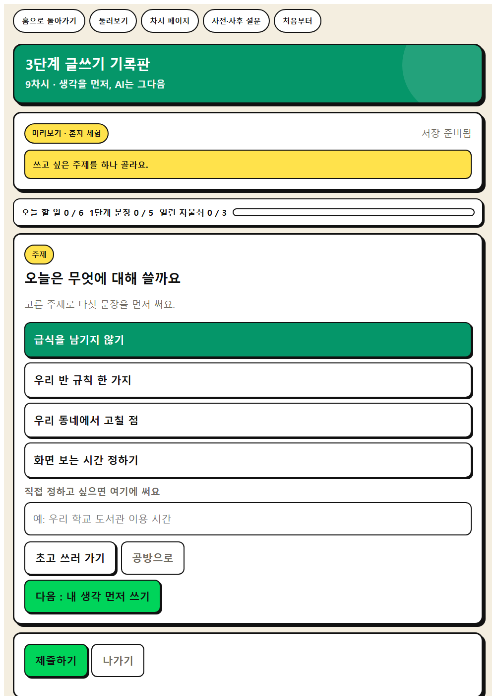
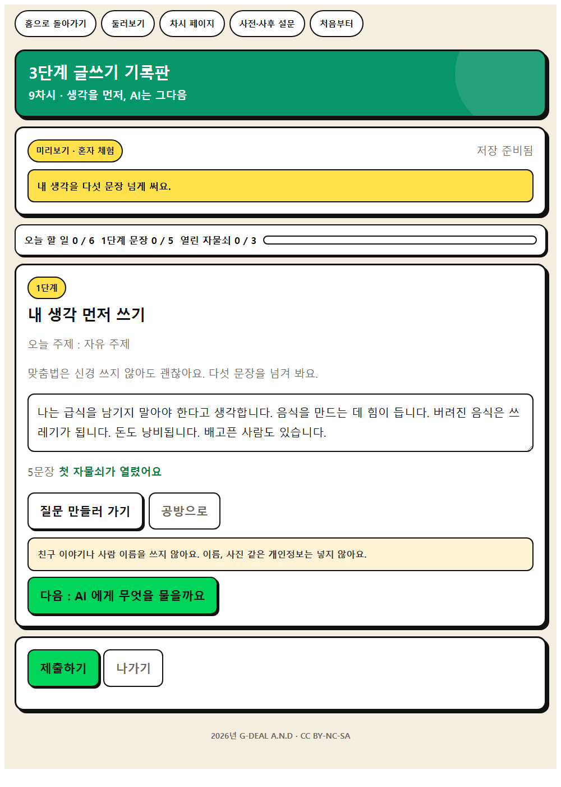
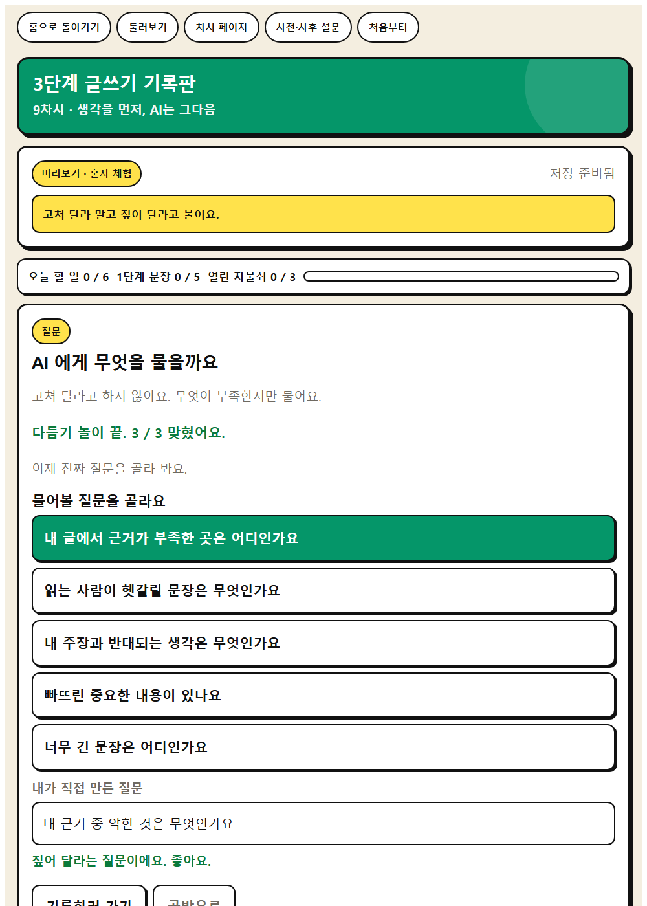
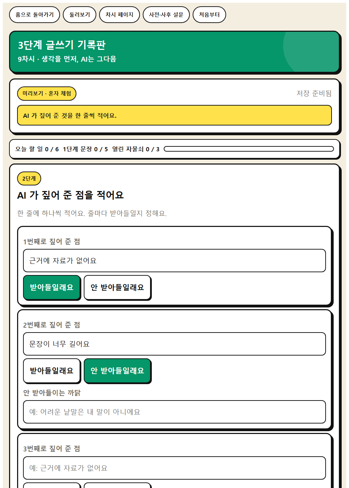
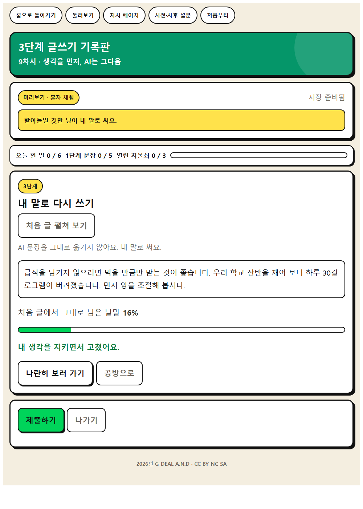

인간중심 사고를 기르는 AI적정활용 수업 WISE · 모듈3 WISE 실천
09
생각을 먼저, AI는 그다음
내 생각을 먼저 쓰고 AI의 도움을 받아 글을 다듬어 봅시다.
오늘의 학습 문제
내 생각을 먼저 쓰고 AI의 도움을 받아 글을 다듬어 봅시다.
AI는 내 생각을 도와주는가, 아니면 대신해 주는가
오늘 기르는 힘
이 시간에 자라는 생각
문제해결 사고
목적에 맞게 질문을 구성하고 더 나은 결과를 얻도록 다듬기
성찰적 사고
자기 판단과 AI 판단의 결과를 비교하고 무엇이 달라졌는지 점검하기
AI적정활용
② 학습자 주체성
도입 · 5분
동기 유발
도입 · 동기 유발
동기 유발
빈 종이 앞에서 바로 AI에게 물어본 적이 있나요? 그때 결과는 어땠나요?
순서를 바꾸면 어떻게 될까요?
도입 · 학습 문제 확인
학습 문제 확인
내 생각을 먼저 쓰고 AI의 도움을 받아 글을 다듬어 봅시다.
도입 준비물과 유의점
이것만 챙기면 됩니다
☆ 3단 글쓰기 안내 PPT
★ 3단 글쓰기 활동지
△ 우리 반 약속 2조항(내 생각 먼저)을 함께 확인
웹앱으로 합니다
3단계 글쓰기 기록판
내 생각 먼저, AI 검토, 내 말로 재구성의 세 글을 한 화면에 나란히 저장하고 무엇이 달라졌는지 쓴다.
선생님 화면 → 새 방 만들기 → 여섯 자리 방 번호를 칠판에 적습니다.
학생은 QR 을 찍거나 주소를 열고 방 번호와 닉네임을 넣습니다.

학생 입장 화면
방 번호 여섯 자리와 닉네임만 넣습니다. 이름을 묻지 않습니다.
나만 아는 숫자 네 자리는 사전 설문과 사후 설문을 잇는 데만 씁니다.

웹앱 1단계
허브
1단계 내 생각 쓰기

웹앱 2단계
topic
2단계 AI가 짚어 준 점 기록

웹앱 3단계
draft
3단계 내 말로 다시 쓰기

웹앱 4단계
부탁 시험소
세 글 나란히 비교

웹앱 5단계
note
note

웹앱 6단계
rewrite
rewrite
교사 화면
제출이 실시간으로 모입니다
학생별 3단계 완료 여부와 변화 설명 문장
결과 크게 띄우기를 누르면 학급 화면으로 함께 봅니다. CSV 로 내려받고, 수업이 끝나면 방을 잠급니다.
전개 · 30분
[활동 1] 1단계 내 생각 먼저 쓰기
전개 · [활동 1] 1단계 내 생각 먼저 쓰기
[활동 1] 1단계 내 생각 먼저 쓰기
주제에 대해 하고 싶은 말을 5문장으로 먼저 써 봅시다.
전개 · [활동 2] 2단계 AI에게 검토받기
[활동 2] 2단계 AI에게 검토받기
내 글을 고쳐 달라고 하지 말고, 무엇이 부족한지 물어봅시다.
AI의 말 중에서 받아들일 것과 아닌 것을 나눠 봅시다.
전개 · [활동 3] 3단계 내 말로 다시 쓰기
[활동 3] 3단계 내 말로 다시 쓰기
세 글을 나란히 놓고 무엇이 달라졌는지 설명해 봅시다.
전개 준비물과 유의점
이것만 챙기면 됩니다
☆ 생성형 AI(교사 계정 또는 모둠 공용)
★ 웹앱 3단계 글쓰기 기록판
△ 2단계에서 ‘대신 써 줘’ 요청이 나오면 즉시 되짚기
△ 기기가 없는 모둠은 교사 시연 결과를 함께 검토
정리 · 5분
배움 정리
정리 · 배움 정리
배움 정리
이 글은 누구의 글인가요?
정리 · 다음 차시 예고
다음 차시 예고
다음 시간에는 나의 AI 사용 습관을 돌아봅시다.
정리 준비물과 유의점
이것만 챙기면 됩니다
★ 3단 비교 글쓰기
△ 설명할 수 있으면 내 글이라는 기준 강조
오늘 쓰는 웹앱
3단계 글쓰기 기록판
내 생각 먼저, AI 검토, 내 말로 재구성의 세 글을 한 화면에 나란히 저장하고 무엇이 달라졌는지 쓴다.
1. 방 만들기
선생님 화면에서 여섯 자리 코드를 만들어요.
2. 들어오기
코드와 비밀번호, 닉네임만 쓰면 돼요.
3. 활동과 제출
고쳐서 다시 제출해도 괜찮아요.
4. 함께 보기
결과 크게 띄우기로 우리 반 결과를 봐요.
활동지
3단 글쓰기 활동지
기기가 부족해도 함께합니다
이렇게 대신합니다
기기가 없는 모둠은 교사 시연 결과를 함께 검토하고 종이 활동지에 3단계를 기록한다.
지도 유의점
선생님이 지켜 주실 것
2단계에서 ‘대신 써 줘’ 요청이 나오면 즉시 되짚는다.
1단계를 건너뛰고 AI부터 쓰지 않게 한다.
오늘 여기까지
다음 시간에는
AI에 기대도 괜찮을까
2026년 G-DEAL A.N.D · CC BY-NC-SA